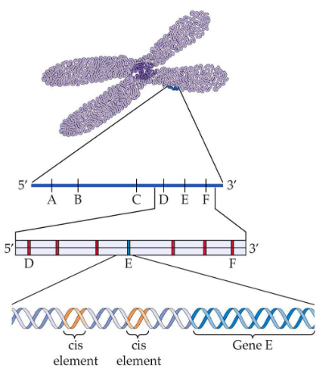
9 Plant Genome
The plant genome is like a library of instructions that tells a plant how to grow, survive, and do all the things it needs to do. But not all plant genomes are the same. They can be big or small, and the size can vary a lot from one plant to another. This is like having different-sized books in the library.
What’s interesting is that a plant doesn’t just have one set of instructions; it has three! It’s like having three different books in the library. These books are the nuclear genome, the chloroplast genome, and the mitochondrial genome. They all contain different sets of instructions, but they need to work together for the plant to function properly.
In the plant genome, there are lots of repeated and noncoding sequences. These are like paragraphs and pages in the books that don’t contain the main instructions but are still important. They play a role in how the plant responds to changes in its environment. Imagine reading a book, and when you see certain words or pictures, you know it’s time to do something specific. That’s how these sequences work.
Plants are pretty smart because many of their genes, which are like sentences in the books, can change how they work based on what’s happening around them. If the environment changes, the plant can switch some genes on or off to adapt. It’s like having a special set of instructions for different situations.
Even when we look at different plant species that are related, we can see that they have some parts of their genome that are similar. It’s like finding similar chapters in different books. This tells us that some parts of the plant genome have stayed the same throughout plant evolution, just like some stories are classics that people still enjoy reading.
9.1 Single Copy Sequences and Repetitive Sequences
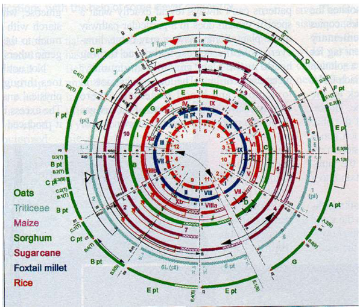
In the plant genome, we have something called “single copy sequences.” These sequences are like unique pages in the library books, meaning they don’t repeat themselves much. Surprisingly, many of these single copy sequences don’t give instructions to the plant. To put it in perspective, if you think about the entire genome of a tobacco plant, around 40% of it consists of single copy DNA, but only a tiny 2% is used for making mRNA, which is like the plant’s way of reading those instructions.
Now, when it comes to repetitive sequences, it’s a bit like having chapters or pages that keep showing up throughout the books but aren’t exactly the same. These repetitive sequences can be divided into two groups: tandem repeats and dispersed repeats. The “tandem repeats” are like chapters with a common theme that you find in the same place over and over in the book. On the other hand, “dispersed repeats” are more like chapters with similar themes that pop up randomly throughout the book.
Here’s the thing – these repetitive sequences can be useful instructions for the plant, but not always. Some of them might be codes for certain plant functions, while others might be repetitive but not have a specific purpose. It’s kind of like having a book where some repeated sections are important and others are just there to fill space.
9.1.1 Tandem Repeats
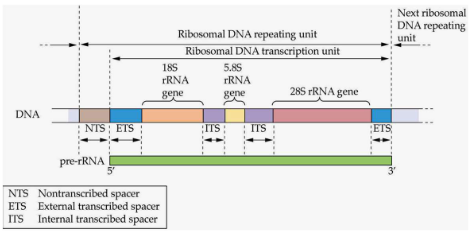
There are some genes that follow a repetitive pattern in plants – it’s like having chapters in a book that talk about the same topic over and over. But here’s the interesting part: these repetitive genes are usually responsible for making stuff that the plant needs a lot. It’s a bit like having a cookbook with many recipes for a favorite dish because you want to make it over and over.
These repetitive genes often make things like ribosomal RNAs (the plant’s protein-making machinery), seed storage proteins (to store food for later), Rubisco (a key player in photosynthesis), the light-harvesting complex (for catching sunlight), and histones (proteins that help DNA stay neat and organized). Just think of them as the most important recipes in the cookbook.
Now, these genes aren’t just randomly scattered. They hang out in clusters or tandem repeats – sort of like a cookbook with all the recipes for your favorite dish placed together. Each gene in these clusters has its own little switch to turn it on or off, which is pretty cool. It’s like having individual recipes in the cookbook that you can choose to cook or skip.
9.1.1.1 Non-Coding Tandem Repeats
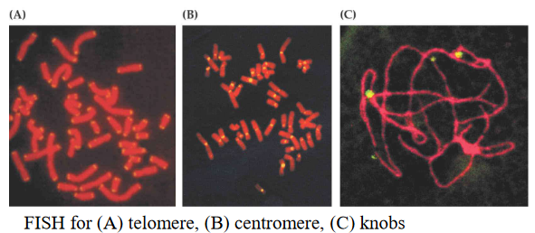
In plants, there’s something called “satellite DNA,” which is like a special type of repetitive DNA that doesn’t code for any specific genes. It’s a bit like having a section in a book that’s filled with random letters – it doesn’t tell a story, but it’s there.
Now, some of these repetitive sequences hang out in the centromere, which is a part of the chromosome. The centromere sequences can be quite different from plant to plant. It’s like having a secret code unique to each plant.
On the other hand, there are repetitive sequences in the telomere, which is another part of the chromosome. These sequences are actually pretty similar among different living things, like plants and animals. They help to keep the chromosomes the right size, and they work together with something called telomerase, which is like the chromosome’s length keeper.
9.1.2 Transposable Elements (i.e., TEs)
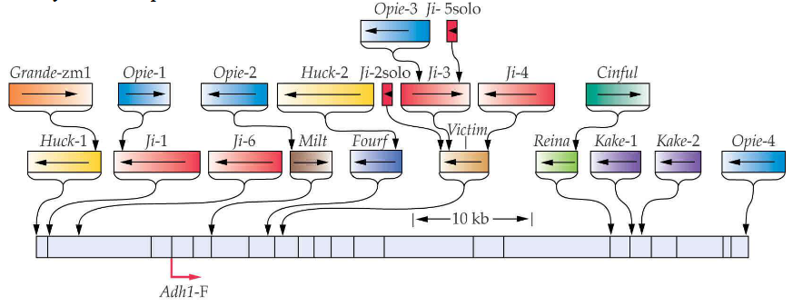
Imagine the genome of a plant is like a big puzzle made of different pieces. Some of these pieces are called “transposable elements.” They’re like tiny jumping parts that can copy and paste themselves into the genome.
These transposable elements can make up a huge part of the plant’s genome, sometimes as much as 90%. They’re like the puzzle pieces that are scattered everywhere, making the puzzle much bigger. These elements are often of the “retrotransposon” variety, which means they use a special trick to copy themselves and spread around even more.
9.1.2.1 Transposable Elements in Maize
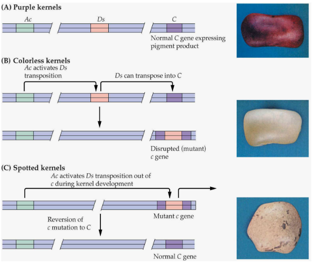
Imagine you have a special kind of plant, like maize (corn), and inside its DNA, there are these little elements called Transposable Elements (TE). They’re like tiny DNA movers.
Among these elements, there are two important ones: “Ac” and “Ds.” Ac is the leader, and Ds is the follower. Ac is the one that can move around on its own, kind of like a leader, while Ds needs Ac to move. So, Ds is like a follower that can only move when Ac is around.
When these elements move, they leave behind a mark called a “footprint.” It’s like a little trail they leave in the DNA.
Interestingly, similar systems with Ac and Ds-like elements are found in other plants, like snapdragons, where they have their own versions of these DNA movers.
9.1.2.2 Classes of Transposable Elements in Plants
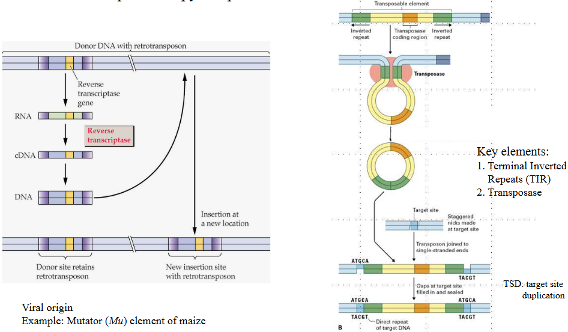
Plants have special elements inside their DNA called “transposable elements.” There are two classes of these elements: Class II and Class I.
Class II transposons are like DNA cutters and pasters. They can cut themselves out from one place in the DNA and paste themselves into another. It’s kind of like cutting a picture from one page and sticking it onto another.
Class I transposons, on the other hand, are more like DNA copiers and pasters. They make copies of themselves and then paste those copies into different parts of the DNA. It’s similar to making photocopies of a picture and placing them in different folders.
9.1.2.3 Functions of Transposable Elements in Plants
Transposable elements (TEs) found in plants have some pretty fascinating functions that are often referred to as “drivers of evolution.” They were once thought of as “selfish DNA parasites,” but we’ve come to learn that they play essential roles in shaping a plant’s genetic makeup. When TEs move around in the DNA, they can sometimes disrupt or alter functional genes. This can lead to changes in the plant’s characteristics, even after the TE has relocated. In other words, TEs can create genetic mutations that stick around.
TEs don’t just shuffle genes; they can also act as sneaky promoters. Sometimes, the promoters within TEs can cause nearby genes to be expressed in unusual ways, which can result in mutant traits in the plant. It’s like TEs are the mischievous conductors of a genetic orchestra, making genes play their music in unique and unexpected styles.
Another role of TEs is epigenetic regulation, mainly through a process called methylation. It’s like putting temporary sticky notes on certain parts of a book to mark important sections. TEs can add these “sticky notes” to genes, which can either increase or decrease their activity. Sometimes, TEs can even influence the behavior of genes located far away from them, sort of like a butterfly flapping its wings and causing changes in distant weather patterns.
One of the most exciting things about TEs is that they can help develop new gene variants. It’s like mixing and matching different puzzle pieces to create new and exciting pictures. The movement and activity of TEs in a plant’s DNA can lead to the creation of entirely new versions of genes.
Many TEs are silenced or kept quiet by methylation. However, this silencing isn’t permanent, and it can be reversed, especially when the plant is under stress. Think of it as pressing the mute button on a TV remote, but you can unmute it when you want to hear the sound again. In this way, TEs have a dynamic role in shaping a plant’s genetic evolution.
9.2 Genomes in Plants
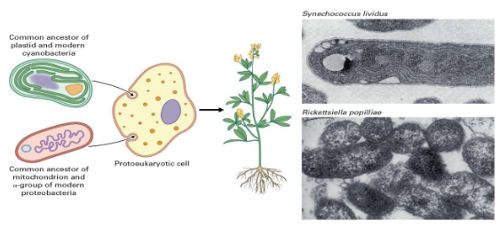
Plants are like treasure chests of genetic material because they house not one, not two, but three different sets of genomes within their cells. This genetic trio includes the nuclear genome, the chloroplast genome, and the mitochondrial genome. It’s like having three different instruction manuals for building and maintaining the plant!
Scientists believe that the origins of these genetic powerhouses are connected to a fascinating idea called the endosymbiont hypothesis. Imagine this: a long, long time ago, tiny prokaryotic cells (the ancestors of modern bacteria) were gobbled up by other prokaryotic cells. Instead of becoming a tasty snack, these little prokaryotic travelers set up shop inside their new hosts. Over time, these cell-squatters evolved into the chloroplasts and mitochondria we see in plant cells today. It’s almost like these tiny squatters turned into helpful housemates.
There’s evidence that supports this idea. When scientists compare the genetic code found in ribosomal RNAs, they see similarities between the genes in chloroplasts and mitochondria and those in modern-day cyanobacteria and proteobacteria. It’s like finding ancient family photos that show how everyone is connected. These similarities suggest that the chloroplast and mitochondria indeed have their roots in these ancient prokaryotes.
Symbiotic relationships, where different organisms team up to help each other out, aren’t unique to plants and their internal roommates. There are examples all around us, like marine nudibranchs, which are sea slugs that munch on algae. The algae help the nudibranchs by providing food and the nudibranchs give the algae a place to live. It’s like a tiny underwater apartment-sharing arrangement! So, just as plants share their homes with these mini prokaryotic guests, many other living things have their own symbiotic stories to tell.
9.2.1 Chloroplast Genome
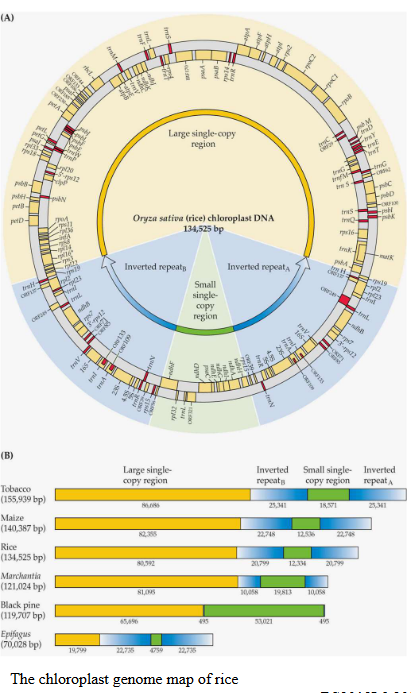
Inside plant cells, the chloroplast genome holds some fascinating secrets. It’s like a carefully preserved book of instructions that gets passed down from generation to generation in plants. What’s really intriguing is that this chloroplast genome is quite consistent across various plant species. Imagine it as a well-organized circular chromosome with four different sections, kind of like how you divide a notebook into different chapters.
These sections include a large region filled with single-copy genes, a smaller region with more single-copy genes, and two segments known as inverted repeats A and B (IRA and IRB). These inverted repeats are like having two copies of the same chapter back-to-back. But here’s the twist: the size of this chloroplast genome can vary from one plant species to another, ranging from 69 to 521 kilobytes. It’s like different versions of the same book, but with a few extra pages here and there.
Now, what’s really important is what these genes in the chloroplast genome are up to. They’re like the main characters in a thrilling story of photosynthesis. These genes include all the instructions for creating ribosomal RNAs (rRNAs) and a full set of genes for transfer RNAs (tRNAs). In addition, there are around 100 single-copy genes that mostly code for proteins essential in the magical world of photosynthesis.
For instance, there’s a gene called rbcL that’s responsible for making a protein crucial in photosynthesis. It’s like the superstar of the show. And then there’s ndh, which plays an essential role in energy production. All these genes work together like a well-coordinated cast to perform the incredible act of turning sunlight into energy. It’s like a plant’s secret recipe for turning light into life!
9.2.2 Mitochondrial Genome
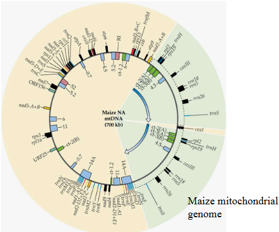
The interesting thing is that plant mitochondrial genomes can be incredibly diverse in size, ranging from around 200 kilobytes to a whopping 10 megabytes. That’s like having a storybook that can be as short as a postcard or as long as an entire library! In contrast, animal mitochondrial genomes are usually compact, around 16 kilobytes, and don’t contain those extra blank pages.
Now, what makes plant mitochondrial genomes even more intriguing is the abundance of noncoding sequences. These noncoding regions are like the margins and empty pages in a book, taking up more than 90% of the Arabidopsis mitochondrial DNA. It’s as if there are pages upon pages of text that don’t directly tell the story but are there for some mysterious reason.
Another notable feature is that plant mitochondrial genomes don’t have a full set of transfer RNAs (tRNAs), which are essential for the translation of genetic instructions into proteins. So, it’s like having a storybook with missing words that need to be borrowed from other books in the cell’s library to make sense of the story. This unique structure and content of plant mitochondrial genomes make them quite different from their animal counterparts, adding another layer of complexity to the incredible world of plant genetics.
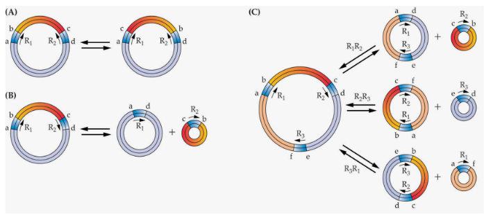
Nonetheless, picture the plant mitochondrial genome as a novel that has been cut into circles, just like those classic fairy tales that you read in an interactive pop-up book.
The reason behind these subgenomic circles is something called recombinations. It’s like taking pages from different parts of the book and connecting them in new and unexpected ways, creating a fascinating twist in the plot. These circular segments have their own distinct stories to tell, and together, they make up the entire narrative of the mitochondrial genome.
9.2.3 DNA Movement in Plants
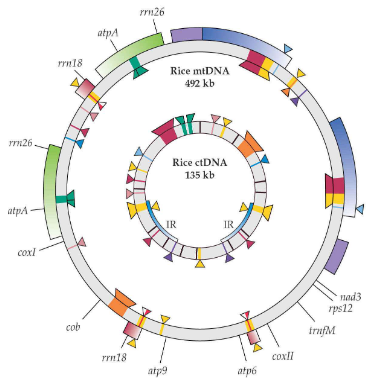
Imagine DNA as a set of secrets that different parts of a plant’s cells share with each other. In the world of plants, these secrets move around like characters in an intriguing drama. You see, the mitochondrial genomes in plants hold pieces of information that are similar to what’s found in chloroplast DNA and nuclear DNA.
It’s like having overlapping storylines in different books. These shared secrets are not only within the mitochondria but also in the chloroplasts and the nucleus. Some might call it “promiscuous DNA” because these DNA sequences are a bit like characters who appear in multiple books – in this case, the three genetic systems of plant cells.
9.2.4 Polyploidy in Plants
Polyploidy is like a genetic superstar in the plant world. It’s when plants have extra copies of their entire set of genes, which makes them a bit like having a spare key to the genetic code. In fact, this phenomenon is super common among plants. To put it in numbers, around half to two-thirds of all flowering plants are polyploids. And when we look at ferns, it’s more than 99% of them, and for grasses, it’s about 80%.
Now, let’s dive into some real-life examples. Take wheat, for instance. It started with an ancestor that had 14 chromosomes (the genetic code). But over time, it doubled its chromosomes to 28, and then the emmer or durum wheat doubled them again to 42. It’s like having more puzzle pieces to work with.
Or, consider Lotus, a plant that decided to double its chromosomes when dinosaurs were still roaming the Earth. This might sound strange, but it was its way of adapting and surviving in a changing world.
So why is polyploidy such a big deal for plants? Well, it gives them more flexibility to adapt and change. They can handle significant shifts in their body plans and, in some cases, even thrive when their environment throws curveballs. Sometimes, polyploidy happens accidentally when different plants interbreed. And in other cases, humans have a hand in selecting plants with extra genes to create better crops. It’s like nature’s way of remixing the genetic code, leading to a diverse and resilient plant kingdom.
9.2.4.1 History of Wheat
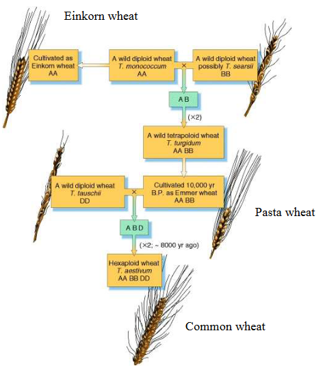
The story of wheat is like a fascinating puzzle that unfolded over thousands of years. It all began around 10,000 years ago when two different types of grasses decided to mix their genetic codes. This was the first step in creating what we now know as bread wheat, scientifically called Triticum aestivum.
But the story doesn’t stop there. Around 8,000 years ago, this newly formed hybrid wheat met another type of wheat called Emmer wheat. When they got together, something magical happened: the number of chromosomes doubled in the new hybrid. So, instead of the typical 14 chromosomes that these grasses usually had, this new species had 42 chromosomes. It’s like the plant world’s version of a genetic jigsaw puzzle.
This complex history of hybridization and chromosome doubling gave us the wheat we know today. It’s a plant with six complete sets of seven chromosomes each, making it one of the most important crops in the world. The journey of wheat, from its humble beginnings to becoming a crucial food source, is a testament to the power of nature and human cultivation.
9.2.5 Whole Genome Duplications
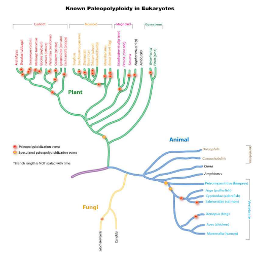
Imagine going back in time millions of years to witness a remarkable event in plant evolution. It’s called Ancient Whole Genome Duplication, or WGD for short. This phenomenon occurred several million years ago and played a crucial role in shaping the world of plants.
One of the most significant WGD events took place around 160 million years ago, and it’s believed to have set the stage for all the flowering plants we see today. You can think of it as the common ancestor of all modern flowering plants.
During these ancient WGD events, plants ended up with extra copies of their entire set of genes. It might sound like a genetic surplus, but over time, it turned out to be a blessing. This redundancy allowed the genes to evolve in different ways, free from the usual selection pressures. In simple terms, it gave plants more room to adapt and thrive.
As time went on, many of these extra gene copies became dormant or were lost. This process is known as diploidization, and it helped the plants return to their usual genetic status. For example, if you take a look at a plant like Arabidopsis or even humans, you’ll find evidence of this ancient duplication in their genomes.
So, why is this ancient WGD so important for plants? Well, first, it allowed plants to tinker with their genes, which ultimately led to better adaptation to their environments. It also improved their agronomics, making them more suitable for domestication and human use. Plus, it played a significant role in the creation of new plant species.
9.3 Evolution of C4 Photosynthesis

Let’s journey back to the days when plants were just starting to figure out the best way to photosynthesize, or make their food using sunlight. This was a crucial evolutionary moment, leading to something known as C4 photosynthesis.
Imagine a time when the Earth’s atmosphere had less carbon dioxide, or CO2, and the climate was hot and dry. During this period, plants were under pressure to find a better way to capture CO2 and make food efficiently. That’s where C4 photosynthesis comes into play.
C4 photosynthesis is like a special trick that certain plants developed to thrive in these challenging conditions. It’s an adaptation that helps plants work more efficiently, especially when there’s not much CO2 around.
Now, here’s the fascinating part: C4 photosynthesis didn’t just happen once. It’s an example of what scientists call convergent evolution, which is a bit like when different groups of plants figure out the same solution to a problem. In fact, it’s happened over 60 times in various plant species around the world.
9.3.1 Evolution of C4 Plants

Imagine 62 different branches of plants, each with its unique adaptation for C4 photosynthesis. These branches are spread across two big plant groups: the eudicots (like sunflowers) and the monocots (like grasses). Among these, 21 branches are what scientists call “C3-C4 intermediates.” This means they have features that are kind of in between the older C3 photosynthesis and the more advanced C4 system.
When we look at the geographic map, it’s fascinating to see that many of these C4 plant lineages are concentrated in regions with arid or semi-arid climates. It’s like nature’s way of helping these plants deal with challenging environments.
Now, let’s break down the evolutionary journey. The first step was the development of something called “proto-Kranz anatomy.” This involves the plant making changes to its leaves, like reducing the space between leaf veins and making the bundle sheath cells (BSC) larger.
Next came the evolution of a sort of “photo-respiratory CO2 pump.” This is like fine-tuning the plant’s engine to work more efficiently. It involved improving a process called the glycine shuttle, making it more effective.
Finally, the C4 cycle itself evolved. In this phase, plants increased the activity of enzymes, such as PEPC, in the mesophyll cells (MC), which allowed them to capture carbon dioxide better. They also improved the work of enzymes in the bundle sheath cells (BSC), where the C3 cycle was becoming confined. Essentially, the plant got really good at taking in CO2 and using it to make food, even when it’s scarce.
9.3.2 mRNA Blueprint for C4 Photosynthesis
Scientists embarked on a remarkable journey by carefully selecting closely related plant species: Cleome spinosa (a C3 plant), Cleome gynandra (a C4 plant), and Arabidopsis thaliana (another C3 plant). These plants became the stars of their study.
Imagine the scientists used a cutting-edge method called massive parallel mRNA sequencing. It’s like reading the genetic instruction manuals (mRNA) of these plants on a grand scale. They then carefully annotated these sequences, like highlighting important passages in a book.
Here’s what they discovered:
Differences in Gene Abundance: The mRNA sequences from these plants showed significant differences in the abundance of certain genes. These genes included those responsible for transcription factors, transport proteins, and others involved in chloroplast movement, cell wall modifications, and plasmodesmatal connectivity. These genes are like the architects and builders of the C4 photosynthesis system.
Shifting Transcription Profiles: They found that these plants had large shifts in their transcription profiles for specific functional classes. This means that the genes responsible for C4 photosynthesis were more active in the C4 plant (Cleome gynandra) than in the C3 plants (Cleome spinosa and Arabidopsis thaliana). It’s like the C4 plant had a team of workers putting in overtime to make C4 photosynthesis happen.
Reduced Need for Photorespiration: In the C4 plant, Cleome gynandra, they noticed a lower demand for a process called photorespiration. This process usually slows down photosynthesis, but C4 plants have figured out how to minimize it.
High Levels of C4 Enzymes: They confirmed their findings by looking at the enzymatic activities in these plants. The C4 plant had high levels of transcripts (genetic instructions) for enzymes specifically involved in C4 photosynthesis.
9.3.3 Genome Duplication and Origin of C4 Photosynthesis
Imagine that scientists carefully selected two closely related plant species: Gynandropsis gynandra (a C4 plant) and Tarrenaya hassleriana (a C3 plant) that went through a whole-genome duplication event. It’s like comparing two siblings to understand the family’s history.
These scientists then performed whole gene sequencing and meticulously compared the genetic material in these plants, almost like reading the entire genetic book of their lives.
Here’s what they uncovered:
Shared Whole Genome Duplication: Gynandropsis gynandra (the C4 plant) shared the history of a whole genome duplication with Tarrenaya hassleriana (the C3 plant). It’s like both siblings having a common ancestor who gave them a duplicate set of genes.
Similar Gene Copy Numbers: Despite this shared duplication, the number of gene copies was quite similar between the C4 and C3 plants. It’s like both siblings inherited nearly identical sets of books, even though there were duplicates.
Transcript Regulation: They also looked at how genes are expressed, or turned on, in these plants. What they found was that the C4 plant, Gynandropsis gynandra, had fewer differences in gene regulation compared to the C3 plant, Tarrenaya hassleriana. It’s like one sibling adhering closely to the original story, while the other made slight adaptations.
Based on these discoveries, scientists drew a conclusion - it’s more likely that the shift to C4 photosynthesis involved tweaking the regulation of existing genes rather than creating entirely new functions from duplicated genes. It’s as if both siblings had the same set of Lego blocks, but one built a new structure using different arrangements.
9.4 Genomics
So, what’s genomics all about? It’s the science that dives deep into an organism’s genetic makeup. This genetic makeup influences everything about that organism, from how it grows to how it functions.
There are two key components in genomics:
Whole Genome Sequencing: Imagine reading every single letter in a book, cover to cover, to understand the whole story. In genomics, we do the same, but instead of letters, we’re dealing with DNA, the genetic code.
Function Characterization: Now, reading the book is just the beginning. We want to know how the story unfolds. That’s where things like transcriptomics (studying gene activity), metabolomics (examining the molecules involved in metabolism), proteomics (investigating proteins), and epigenomics (exploring how genes are regulated) come into play. They help us understand how genes actually work and interact.
9.4.1 Whole Genome Sequencing
Imagine you have a really exciting book, but you want to read every word in it. That’s what scientists do with whole genome sequencing (WGS). They read every single letter in an organism’s DNA, which is like the book of life for that organism. But here’s the cool part: this technology has gone through some amazing changes.

In the beginning, it was pretty expensive and slow, like the first generation of WGS, where they used a method called Sanger sequencing. It was like carefully reading the book one letter at a time.
Then, things got faster and cheaper with the second generation. They used super high-tech machines like Illumina’s sequencers that could read millions of letters all at once. It was like speed-reading a whole library!
And now, we’re in the third generation of WGS. This is like having a magical book that you can read without tearing it apart. These new technologies don’t need to cut the DNA into tiny pieces, and they give us long, uninterrupted sequences. It’s kind of like reading a really long story without any breaks.
9.4.1.1 Why do Whole Genome Sequencing?
Whole genome sequencing is like opening a treasure chest of knowledge in the world of genetics. When we unlock the secrets hidden in an organism’s entire genetic code, we can uncover remarkable insights.
Firstly, it offers a window into the past, helping us understand how species have evolved over time. It’s like looking at old family photos to see where you came from.
Then, there are those elusive genes that are quite shy and don’t like to be cloned the traditional way. Whole genome sequencing gives us a sneak peek at these mysterious genes that play crucial roles in essential plant processes, such as building wood or making flowers bloom.
It’s like having a backstage pass to a concert – we get to see the stars behind the scenes.
Whole genome sequencing also shines a spotlight on gene families. These are like different branches of the same big genetic tree. They help us confirm the unique qualities of a species. It’s like discovering that all the members of a family have a shared love for music.
Moreover, this incredible technology helps us create a comprehensive catalog of all the DNA variations within a species. Think of it as collecting all the different colors in a painter’s palette. When we know these variations, we can use them to understand traits and even guide breeding.
9.4.2 Illumina Sequencing Technology
First, scientists create something called a genomic library. Imagine it’s like a treasure chest filled with tiny DNA fragments. Each of these fragments is like a piece of a puzzle. They add special sequences to these puzzle pieces that help the sequencing machine do its job.
Now, here’s where the magic happens. The machine takes these little DNA fragments and makes a bunch of copies of them, like a photocopier. It creates hundreds of identical copies in what they call clusters.
Once the clusters are ready, the machine starts sequencing. It’s like reading a book, but in this case, it’s reading the DNA letters. For each letter (A, T, C, or G), they use a special tag that’s like a tiny colored flag. As they read the DNA, the machine records which flag (or base) is added. They do this over and over, like reading one page after another.
After they’ve read everything, they analyze the data. They look at all the flagged bases to figure out the DNA’s sequence.
What’s really amazing is that this technology can do all of this for millions of DNA clusters at once, making it super fast. And because they read the DNA twice, once for each strand, it’s incredibly accurate. It’s like having two proofreaders for every book, so you don’t miss a single typo.
9.4.3 Single Molecule Real Time (i.e., SMRT) Sequencing
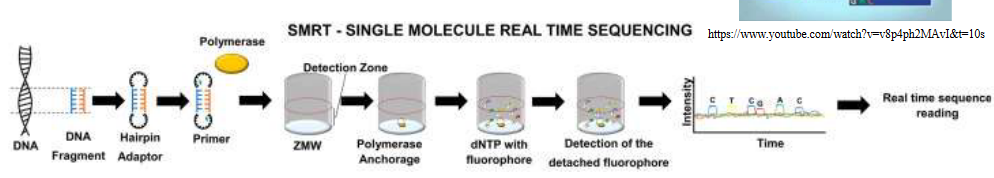
First, scientists take their DNA and put these special hairpin loop adapters on it. These adapters have a spot where the sequencing process can begin. Imagine the DNA bending back on itself to form a circle. This circular DNA is now ready for sequencing.
Next, they bring in the star of the show: a DNA polymerase. Think of it like a tiny machine that reads the DNA. This polymerase is placed in something called a zero-mode wave guide (ZMW) chamber. The ZMW chamber is super tiny and acts like a little room where only one DNA fragment is allowed in at a time.
Now, the exciting part begins. They start reading the DNA. As each DNA letter (A, T, C, or G) gets added, a special color-changing molecule, or fluorophore, is also attached. This molecule is like a tiny glowstick. When it lights up, it’s a signal that a DNA letter has been read.
But there’s a twist. Once the DNA letter is read, the fluorophore is cleaved, which means it’s snipped off. As it’s snipped, it emits a little flash of detectable light. This flash tells scientists which DNA letter was there. It’s like the DNA is revealing its secrets in real-time.
The coolest thing is that this polymerase enzyme is super-efficient and fast, so it can read really long stretches of DNA without making mistakes. That’s why SMRT sequencing is so amazing – it gives us incredibly long and accurate reads of DNA. It’s like reading a whole book in one go instead of just a single page.
9.4.4 Arabidopsis Genome Findings
Scientists first started working on Arabidopsis’s genome back in 1996 and managed to finish it by 2000. To put that in perspective, it’s like they started decoding a secret message and, four years later, they could read it all.
They didn’t just read the DNA letter by letter, though. Instead, they broke it into smaller pieces called Bacterial artificial chromosomes, or BACs for short. It’s like taking apart a big puzzle and then putting it back together to see the whole picture.
The Arabidopsis plant has a pretty small genome. We’re talking about 115.4 million bases, which are like the DNA building blocks. That might sound like a lot, but compared to other plants, it’s quite compact.
Now, the cool part. Arabidopsis’s genome has around 25,498 genes. These genes are like sentences in the plant’s instruction manual, and they belong to about 11,000 different families. It’s like having 11,000 different groups of sentences in the manual.
But here’s the catch – we don’t know what all of these genes do. Scientists have only figured out the job of 69% of them by comparing them to genes with known functions. And when it comes to doing experiments to understand how these genes work, they’ve only studied about 9% of them. So, it’s like having a manual with lots of pages still waiting to be read.
Here’s another interesting thing: Arabidopsis’s evolution story is pretty unique. It went through a whole-genome duplication, which means it had two copies of its entire instruction manual at one point. Then, over time, it lost some of those genes and even made extra copies of some others. It’s like having a book, making a photocopy of the whole thing, and then deciding which pages you don’t need while printing some pages twice.
9.4.4.1 More on the Genome
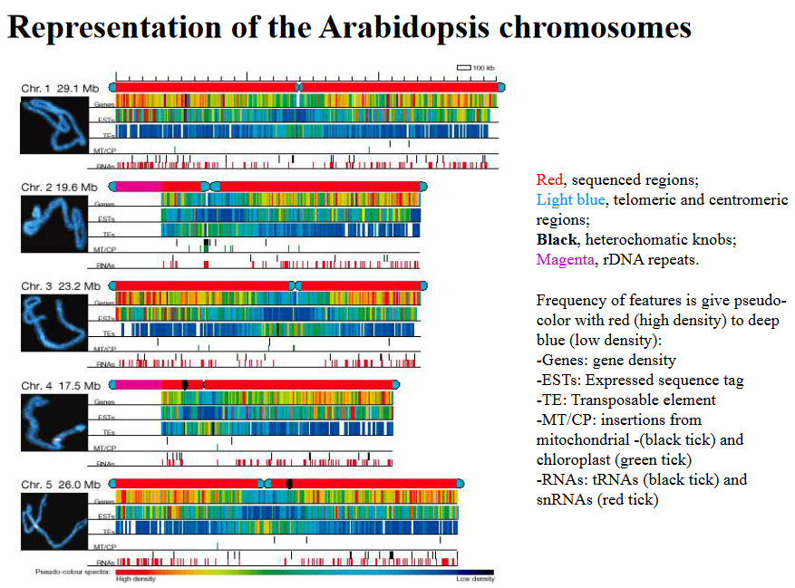
First off, when we look at the parts of the genome that code for important stuff (those are called exons), we find something intriguing. These exons are quite rich in a particular set of building blocks known as GC pairs. In fact, about 44% of these pairs are GC, which is more than the 32% in the non-coding regions called introns. It’s like certain chapters in a book are written in a unique and special language.
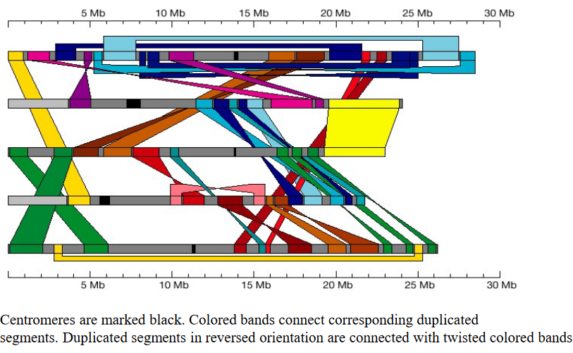
Now, when it comes to the genes, there’s a mix of uniqueness and togetherness. Imagine you have a bunch of friends. In the Arabidopsis genome, 35% of genes are like those unique pals who don’t have many other similar friends around. But there’s also a club where 37.4% of the genes belong to a multigene family, which is like having lots of cousins in your family tree.
But wait, there’s more to this genetic landscape. It’s kind of like a wild garden where you find some jumping genes, also known as transposons. These transposons make up at least 10% of the genome. Interestingly, the areas where these genes hang out have fewer regular genes and don’t swap genetic material as often. Think of it as a neighborhood where folks keep to themselves.
Now, here’s where things get really exciting. A big chunk of the genome is all about supporting the plant’s metabolic processes, kind of like how your body has organs to keep you healthy. These genes help with various tasks, from photosynthesis (basically the plant’s way of making food) to respiration (yes, plants breathe too), and even acquiring important minerals. It’s like having a multitasking team working around the clock to keep the plant alive and well.
The genome doesn’t stop there. It’s got a bunch of other genes responsible for making things like lipids (think plant fats), fatty acids, amino acids (the building blocks of proteins), and even nucleotides (the pieces that make up DNA). These genes are like the plant’s very own recipe book for life.
But there’s more – pyruvate kinase and cell wall metabolism genes. They help create, repair, and modify the plant’s protective outer layer. It’s like having a construction crew to build and renovate the plant’s fortress.
9.4.5 Challenges of Plant Genome Sequencing
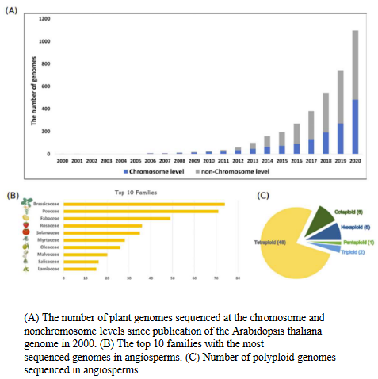
The last two decades, from 2000 to 2020, have been truly remarkable in the world of plant genome sequencing. Scientists have made some incredible progress and faced some exciting challenges.
During this time, they’ve published over a thousand plant genomes, which represent a whopping 788 different plant species. Imagine having a thousand different blueprints for plants! In the first ten years, most of the focus was on well-known model plants and essential crops, like the superstars of the plant world. These genomes were like the building blocks of our knowledge.
However, the second decade was a game-changer. The number of genomes sequenced skyrocketed, increasing by 50 times! Researchers didn’t just stick to the familiar faces; they ventured into the world of diverse and lesser-known species. They also improved the quality of these genome assemblies, ensuring they were more detailed and accurate. They even tackled some really big genomes, like the heavyweight champions of the plant world.
But the adventure doesn’t stop here. There are many more plant genome sequencing projects in the pipeline. One exciting example is the 10KP project, which aims to sequence the genomes of 10,000 different plant species. It’s like a grand expedition to discover the genetic secrets of plant life.
However, with every exciting journey, there are challenges. Scientists are striving to create gapless reference genomes, where there are no missing pieces in the plant’s genetic puzzle. They also want to tackle more complex genomes, the ones that are like intricate mazes waiting to be unraveled. And they’re working on building reference pan-genomes for a species, which means understanding not just one version of a plant’s genome but all the possible variations.
9.4.6 Genome of Durian
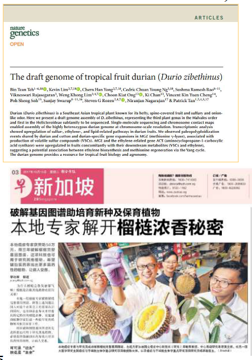
The fascinating world of genomics recently took a delightful detour to explore the genome of the durian, a fruit of great local interest. To unlock the secrets within, scientists employed some impressive technical approaches. They used a combination of Single Molecule Real Time (SMRT) sequencing for those long reads and Illumina for shorter ones, like having both a telescope and a magnifying glass. They also performed RNA-seq, which is like eavesdropping on the conversations of different parts of the durian plant, such as the fruit, leaf, stem, and root.
The genome they unveiled turned out to be 738 million base pairs in size, like a massive book of genetic information. Inside this genetic book, they discovered 45,335 predicted gene models, with an average size of 1.7 kilobases. Surprisingly, only 4% of these genes were unique to the durian. It’s like finding a few unique words in a gigantic novel.
The genome also contained a repeating theme, literally. About 54.8% of the genome was made up of repeated sequences, like reading the same sentence over and over.
But here’s where it gets even more exciting. The durian’s genes started singing during the fruiting season. Genes related to sulfur, ethylene, and lipids became more active. Two special genes called methionine lyase (MCL) and aminocyclopropane carboxylic acid synthase (ACS) were in the spotlight. They joined forces with their entourage of molecules, creating something called volatile sulfur compounds (VSC) and ethylene.
What’s even more interesting is that the durian shares a whole-genome duplication event with cotton. It’s like they’re distant relatives who once had a similar family reunion in their genetic history.
Why does all of this matter? Well, the durian’s genome is the first in the Helicteroideae subfamily to be fully sequenced. This achievement is a game-changer for researchers and could have a big impact on our understanding of tropical fruit biology and agronomy, like having the ultimate guide to growing and enjoying these unique fruits. It’s a bit like discovering a treasure map for the world of durians.
9.5 Gene Function Annotation
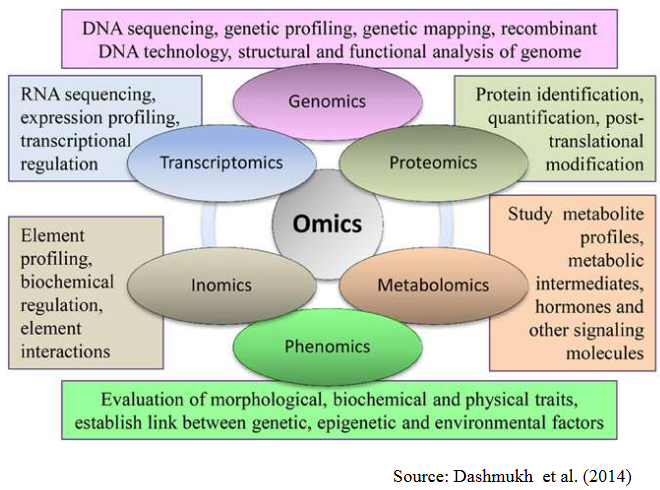
Imagine you’re in a massive library filled with countless books, each representing a gene. Your task is to decipher the meaning and importance of every single book, which is akin to figuring out what each gene does. It’s like a puzzle where you need to connect the dots.
Functional genomics is our way of tackling this monumental challenge. We’re equipped with tools and methods to tackle the entire genome at once. Instead of reading one book at a time, we’re trying to read the entire library in one go. This approach allows us to see how all the genes in an organism work together, kind of like watching all the characters in a complex story play their roles.
9.5.1 Challenges with Gene Function Annotation and Characterization
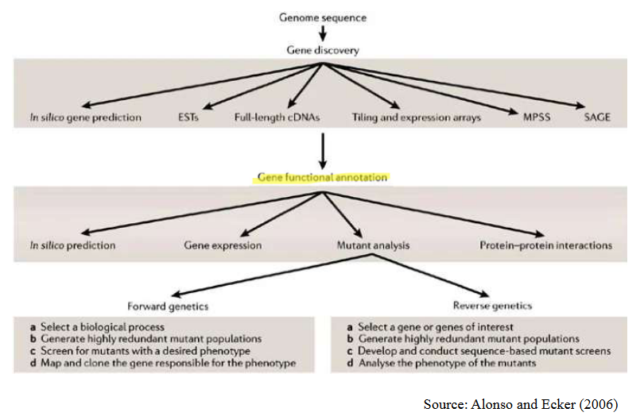
Firstly, many of the genes we find through sequencing are like undiscovered treasures. They’re novel, unique, and not quite like anything we’ve seen before. In fact, in Arabidopsis, a model plant, over 40% of the genes are entirely novel. It’s like finding new species in a jungle.
Even when we look at genes from different organisms, they may seem similar on the surface, but figuring out their specific role in a particular organism can be as tricky as solving a riddle. Just because they look alike doesn’t mean they act the same way.
Imagine you have a big family with many cousins who look nearly identical. Some might have the same hobbies and interests, but others could be completely different. That’s what it’s like when we discover multi-gene families. They may share strong similarities in their genetic sequences and behave similarly, but each one has a unique role, just like cousins with their own talents and interests.